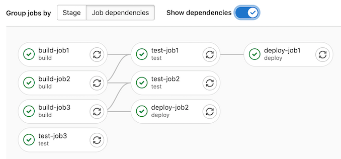

Gitlab CI/CD Presentation
Make changes in your application!
Leave out all the rest :D
Presentation by Amirhossein Najafizadeh, Aref Tabatabaie, and Tina Towhidkhah
Presentation Topics
- Why Gitlab?
- Continuous Integration and Continuous Delivery!
- What is Gitlab Pipeline?
- Execute jobs on Gitlab Runner.
- How to build a CI?
- Live Demo (not so fresh)
- What's Next?
Why Gitlab?
GitLab is an open source code repository and collaborative software development platform. GitLab is free for individuals. GitLab offers a location for online code storage and capabilities for issue tracking and CI/CD. Since it's open source, it's popular between big companies, even better than other code repositories. Very easy to set up. User-friendly UI and tools. Allows an unlimited number of free private repositories. Can integrate many APIs and third-party services.

Other code repositories?
GitHub, GitTea, Subversion, ...
There are a lot of code repositories, but the most useds are GitHub and Gitlab.
The major difference between GitHub and GitLab is the platform each philosophy presents. GitHub has higher availability and is more focused on infrastructure performance, while GitLab is more focused on offering a features-based system with a centralized, integrated platform for web developers. But they both provide a tool which helps developer team to change their application sufficiently.
Continuous Integration and Continuous Delivery!
Continuous Integration (CI) is the practice of merging any new code changes to the main branch. Continuous Delivery (CD) automates manual tasks that are required to build and test software (for example, by automating tests).

Benefits?
Remember Agile slides!?
Continuous integration/continuous delivery, more commonly known as CI/CD, promises to help software companies
become more agile by delivering software faster and more reliably. The goal of CI/CD is to reduce software
development and delivery timelines from months or weeks down to days or even hours.


What is Gitlab Pipeline?
In order to do CI/CD stages, Gilab provides something called pipeline. With pipeline as code, teams can configure builds, tests, and deployment in code that is trackable and stored in a centralized source repository. Teams can use a declarative YAML approach or a vendor-specific programming language, such as Jenkins and Groovy, but the premise remains the same. Each stage is perfomed by a job which will be handled in Gitlab runner. We will get into that later.

What stages do we have?
- Lint: Check if the code is clean or not. Based on clean-coding rules.
- Test: Execute unit tests to check the system components.
- Compile: Compile the application into an executable file.
- Build: Building our executable file inside an docker image for example.
- Release: Release a new version of our application.
- Deploy: Make a deployments based on the latest release.
Execute jobs on Gitlab Runner.
Each stage, creates a new job in Gitlab. Gitlab Runner is an application that works with GitLab CI/CD to run the job in a pipeline. It is open-source and written in Go Language. It can also be run inside the Docker container or it can be deployed into a Kubernetes cluster. The GitLab Runner receives instructions from the GitLab server in regards to which jobs to run. Each runner must be registered with the GitLab server. Runner Executor, each Runner will define at least one executor. An executor is essentially the environment where the job will be executed.
Why Runner?
GitLab runner is a build instance which is used to run the jobs over multiple machines and send the results to GitLab and which can be placed on separate users, servers, and local machine. You can register the runner as shared or specific after installing it.
How to build a CI?
Before you start, make sure you have:
- A project in GitLab that you would like to use CI/CD for.
- The Maintainer or Owner role for the project.
In GitLab, runners are agents that run your CI/CD jobs. To view available runners Go to Settings > CI/CD and expand Runners. Now create a .gitlab-ci.yml file. It is a YAML file where you specify instructions for GitLab CI/CD. In this file, you define the structure and order of jobs that the runner should execute, and the decisions the runner should make when specific conditions are encountered.
Example
build-job:
stage: build
script:
- echo "Hello, $GITLAB_USER_LOGIN!"
test-job1:
stage: test
script:
- echo "This job tests something"
deploy-prod:
stage: deploy
script:
- echo "This job deploys something from the $CI_COMMIT_BRANCH branch."
environment: productionLive Demo (not so fresh)
What's Next?
Now that we have a pipeline, we can use other tools in order to make the deployment. We can use Image Registery (like Docker). We can use Kubernetes Helm Charts. We can use Jenkins. We can use Flask or ArgoCD to change the deployment environment to update the versions.